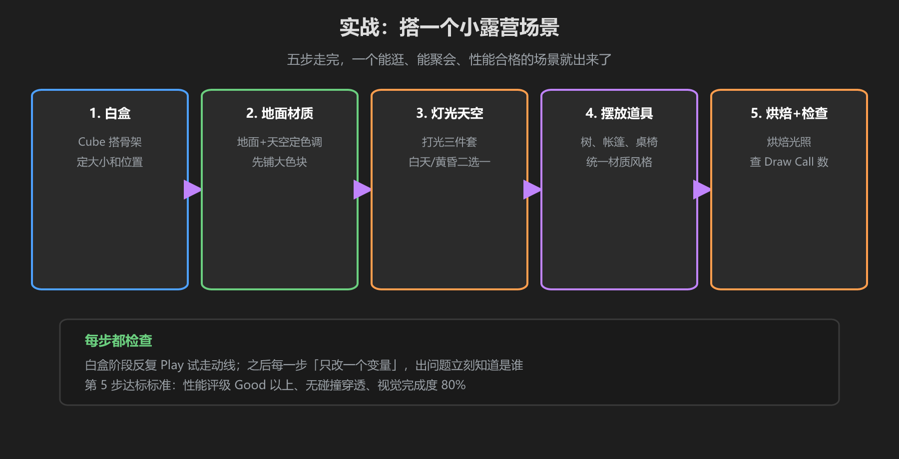
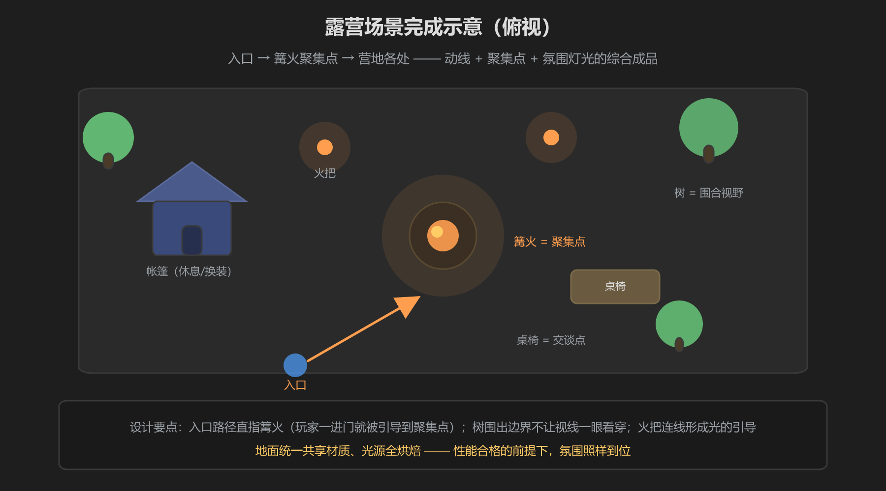

第 5 篇：实战 — 搭一个小露营场景
把前四篇串起来。目标：一个能逛、能聚会、性能合格的夜晚露营营地（约 20×20 米）。跟着五步走，每步做完都按一次 Play 检查。
五步流程

图：白盒 → 地面材质 → 灯光天空 → 摆放道具 → 烘焙+检查
步骤 1：白盒 Blockout（30 分钟）
- 用 Cube 铺一块 20×20 地面，确定边界
- 搭出主角位置：篝火区（中心）、帐篷区、桌椅区、树的位置
- 按 Play 走一圈：入口在哪、视线是否被挡、聚集点是否显眼 —— 不满意就改，别进入下一步
步骤 2：地面材质（20 分钟）
- 把地面 Cube 换成平面 + 草地材质（一个共享材质铺全场，别拼碎块）
- 给帐篷、桌椅、树木定下统一风格：木色 + 绿植 + 布料的色板
- 先铺大色块，细节（纹理、花纹）放到最后
步骤 3：灯光与天空（30 分钟）
- 选黄昏天空盒（夜晚营地氛围），勾选雾，浓度中等偏浓
- 主光一盏 Directional，角度放低模拟夕阳
- 篝火处放一盏 Point Light（暖橙色）做补光，火把处视情况加
- 加一个全局 Volume：色彩分级压暗环境、Bloom 让火光发亮（阈值别太低）
步骤 4：摆放道具（40 分钟）
- 所有树用同一个材质（合批），树多就加 LOD Group
- 木箱、木桌、围栏统一木材质；需要换色的细节靠贴图 UV 区域，不新建材质
- 桌椅、帐篷确认有 Collider；篝火火焰粒子循环但粒子数克制
- 入口摆个路标/旗帜，把玩家视线引向篝火（动线！）
步骤 5：烘焙 + 性能检查（30 分钟）
- 静态物体勾
Static，篝火 Point Light 设为Baked，Generate Lighting烘焙 - 打开
Occlusion Culling烘焙（场景里有树墙和帐篷，能挡住不少东西） - Build 一次，看 VRChat SDK 性能评级：Good 以上达标；红了对照第 4 篇预算表逐项查
- 最后按 Play 整体走一遍：碰撞穿透、暗区、粒子是否乱跑
最终效果参考

图：入口路径直指篝火聚集点，树围出边界，火把连线引导光线（俯视示意）
为什么这样摆？篝火在中心 = 所有人自然聚过来（聚集点）；树围一圈 = 视线有边界、不会被一眼看穿（场景叙事的主体感）；火把连成一条光带 = 引导玩家逛完整片营地（动线）。这就是第 1 篇三个概念的实际落地。
完成检查清单
- 入口 → 篝火 → 各区域的动线走得通、看得见
- 所有可站立物体有 Collider，无穿透、无掉出世界
- 共享材质数量少（数一遍 Project 里的材质）
- 实时光源 ≤ 2 盏，其余已烘焙
- 粒子：篝火火焰正常，无乱跑、无多余循环
- Build 后性能评级 Good 以上
- 黄昏氛围到位：天空盒 + 雾 + 泛光协调